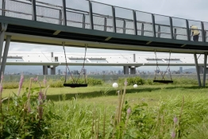

No. 189.11野花園小行星
★屋頂花園探秘
科教館全新規劃的屋頂花園，於科學節期間搶先曝光。
依著科教館360度環景地理位置和高度優勢而規劃的空中花園，有一座「城市之環」的高架步道。順著城市之環行走，日間可盡收台北山系、河流及城市景觀視野於眼底，傍晚則可欣賞夕陽暈染大地的絕景，夜間則更是觀星的極佳秘境。
「城市之環」串聯了屋頂花園裡西側的「實驗花園」、南側「地景草坡」及東側「蜂花園」三個不同屬性的實驗空間。
「實驗花園」是個花草野放生長的空間，千萬別小看它，這裡隨時會搖身一變為戶外展示場域，各種生物多樣性相關，或是植物主題的展覽活動都有可能在這裡發生。
「地景草坡」有時是室內多功能教室的延伸場域，有時則是療癒的休憩及活動空間。您也可以體驗橋下的減震教具喔~
「蜂花園」的主人是蜜蜂，屋頂花園裡遍布了蜜源植物、生態池跟大大小小的西洋蜂箱與獨居蜂箱。如果想更認識蜜蜂，只要提出申請，透過專業環教人員的引導，您將認識蜜蜂可愛討喜的另一面。
屋頂還有一處景觀極佳的木棧平台和規劃中的景觀餐廳，建置完成後從早到晚都將有不同特色的美景相佐用餐。
科教館期望透過發揮環教場域特色及地景優勢，讓人與城市及環境的觀察互動可以更貼近、更垂手可得。
 
▲1101 主題活動
活動名稱：屋頂花園探秘
時間：每場40分 (10分鐘講解，30分鐘自由探索)
人數：每場50人
場次：
11月6日 09:30、14:30、15:30、16:30、19:00、20:00
11月7日 09:30、14:30、15:30、16:30
集合地點：9F西側電梯旁 (請於活動開始前10分鐘抵達集合點)
活動單位：本館、台北市立天文館
介紹：導覽及參觀本館11F屋頂花園
備註：
11月6日夜間場特邀臺北市立天文館於本館屋頂架設專業望遠鏡
在野花園小行星上，徜徉於夜空的點點繁星，透過導覽員的解說，帶你認識當季的星座與星星的奧秘。此外，透過望遠鏡更可以窺探明亮的金星以及與許多小月亮共舞的木星。如果意猶未竟，還可以在活動後前往隔壁的天文館，用更大的望遠鏡揭開宇宙更深處的神秘面紗。
*觀星活動將視當天氣候辦理，如遇氣候不適，將取消辦理，以活動現場公告為主
**11月6日(週六)天文館天文觀測室開放時間: 19:00~21:00